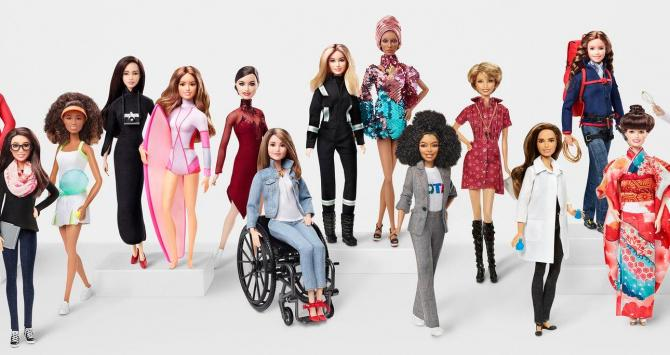

Fue el 9 de marzo de 1959 cuando la muñeca se dio a conocer en la Feria del Juguete de Nueva York. Ese año vendió 350.000 ejemplares. Su precio: 3 dólares. Desde entonces, ha cambiado de forma, ha representado diversas etnias, se ha echado novio, Ken, y hemos descubierto que tiene apellido: Roberts. Así ha evolucionado Barbie Roberts.
 Ir a inicio Ir a inicio |
 Ir a la creadora de la barbie Ir a la creadora de la barbie |
 Ir a la barbie y el origen de Ken Ir a la barbie y el origen de Ken |
 Ir a la barbie tottaly hair Ir a la barbie tottaly hair |
 Ir a la celebración de los 60 años |